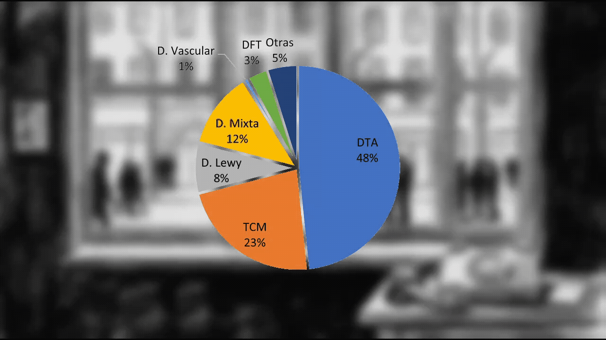

Los de la ventana
por Ignacio Chaneton
Ensayo poéticotestimonialpersonalinteractivoPieza net art

01 Premisa
Hace algunos años mis hermanos y yo supimos que mi madre estaba empezando a atravesar un proceso de deterioro cognitivo irreversible. Descuidos, distracciones, pero sobre todo olvidos, comenzaron a hacerse cada vez más evidentes. En ese momento, los estudios médicos no podían toavía ponerle nombre de algún investigador célebre a lo que le pasaba, pero sí confirmar que le pasaba algo. La denominación técnica para definir aquella etapa inicial de su condición describía exactamente lo que veíamos: “deterioro cognitivo temprano”. Dicho mal y pronto: el cerebro de mi mamá estaba envejeciendo y desgastándose antes de lo esperable y, según los médicos, ese detarioro, tarde o temprano, iba a derivar en algún tipo de demencia, quizás ya sí, con nombre y apellido.
Ella y mi padre no vivían en Buenos Aires entonces, así que, al recibir la noticia, hice en su momento lo único que tenía a mano para darle forma a la angustia y el dolor: tomé una guitarra y grabé una canción en la computadora, a la cual llamé “Los de la ventana”. La canción no describía la situación actual de mi madre en ese momento, todavía contenida y disimulada bajo el ala protectora —y algo negadora— de su esposo y compañero de vida, sino lo que entendía yo que iba a ser de ella conforme el tiempo pasara y su condición empeorara. Imaginaba a mi madre mirando el mundo a través de una ventana, por la cual veía pasar a desconocidos.
El año pasado mi padre murió; perdió la batalla final contra una enfermedad que lo venía asediando desde hacía veinte años, y mi madre, ahora sí, se quedó mirando a través de su ventana, por más hijos y nietos alrededor que se empeñan en animarla, conjurando la tristeza en memoria y recuerdos cada vez más esquivos.
02 Idea
Una interfaz única, cuyo motivo es, justamente, una ventana, presentada en estilo “dibujo a mano alzada”. Detrás de la ventana: una secuencia, a escasos fps, de siluetas, también en dibujo, pasando, yendo y viniendo, o asomándose furtivamente a espiar. La secuencia es aleatoria, caótica. Al hacer click, tanto en las siluetas como en otros sectores específicos de la interface, se disparan audios testimoniales en los que escuchamos a personas diversas, a saber:
- Mis hermanos y yo relatando lo que vemos y entendemos respecto del proceso que atraviesa mi madre.
- Amigos relatando su percepción, más espaciada en el tiempo, sobre su situación.
- Especialistas que den cuenta de las particularidades y especificidades clínicas, psicológicas, sociales de su enfermedad.
- Mi madre misma, hablando sobre diferentes aspectos de su vida: recuerdos, experiencias, la ausencia de su compañero de vida, y su propia condición actual.
Según de qué tipo de testimonio se trate, a través de la ventana podrán aparecer, mientras el audio se esté reproduciendo, imágenes proyectadas en estilo diapositiva o super-8, según se trate de fotografía o imagen en movimiento, reinterpretadas en estilo "dibujo a mano alzada". El audio del ventilador de disipación o el motor de arrastre del proyector acompañarán las imágenes cuando sea pertinente. En cuanto a los testimonios de profesionales y especialistas, estos estarán acompañados por gráficos ilustrativos, según corresponda, o información estadística, que se sobreimprimirá, para una mejor lectura, por delante de la ventana.
03 Aleatoriedad, memoria, temporalidad
La pieza se confecciona en una suerte de relato coral, en donde lo que se cuenta es más un estado que una historia propiamente dicha. Toda noción de linealidad histórica o temporal queda entonces, de cierta forma, abolida. Los personajes que transitan del otro lado de la ventana, al ser meros bocetos, se parecen todos entre sí, pero cada uno dispara un testimonio diferente. La aleatoriedad en la estructura se apoya, así, en dos circunstancias:
- El espectador no sabe qué testimonio corresponde a cada una de las figuras transitando.
- Las figuras son siluetas muy parecidas entre sí.
Si el espectador lograra acaso reconocer a alguno de los personajes y volver a escuchar el audio que este dispara, empezaría a operar allí una segunda regla general. La metadata de cada testimonio escuchado se guarda en el Local Storage del browser; el usuario tiene que hacer una operación técnica voluntaria para resetearlo. Dicha información se utilizará para impedir la repetición de testimonios, según el siguiente criterio:
- Presente
Los testimonios que refieren a cuestiones del presente, o a recuerdos de algo inmediato en el tiempo, no pueden volverse a escuchar.
- Pasado próximo
Los testimonios que refieren hechos de un pasado próximo, pueden escucharse de 2 a 3 veces.
- Pasado lejano
Los testimonios que relaten hechos de un pasado lejano, podrán escucharse de 4 a 5 veces.
Conforme un testimonio queda deshabilitado para la escucha, su personaje disparador no vuelve a aparecer. En algún momento, si el usuario se toma el trabajo de escuchar cada audio, la ventana quedará vacía.
La estructura de impedimento o descarte, vinculada a lo próximo y lo lejano en el tiempo, no pretende más que reflejar, de manera directa, la forma en que el proceso neurodegenerativo suele producirse.
04 Mapa de interacciones
Desde la interface general, cada silueta y cada objeto disparan audios específicos (testimonios, recuerdos, opiniones de especialistas) y composiciones diferentes detrás o delante del vidrio (material fílmico, fotos, imágenes evocativas, gráficos o información dura). En esta instancia, al clickear en cualquier otro lugar de la interface —siempre y cuando no corresponda a otro link—, el usuario puede volver a la interface general.
Nota 1: a fin de preservar cierta claridad en esta presentación, la estructura de interacción se muestra en su forma básica y simplificada. Debe ser considerada en razón de sus posibilidades de escalabilidad.
Nota 2: las imágenes y audios que aqui se presentan se muestran a título ilustrativo, y no necesariemente formarán parte de la pieza final



05 Fundamentos
La pieza se inspira, conceptualmente hablando, en uno de los referentes fundacionales de la narrativa “net.art”: My boyfriend came back from the war, de Olia Lialina (1996). En su obra, la autora rusa se vale del recurso del frame html y la estética duotono/stencil para, a través de una estructura interactiva enrevesada e impredecible, evocar de manera fragmentada una relación conflictiva, cual si dentro de su mente la estuviéramos viendo.
En este caso, no intento reproducir la estética net.art per se, y su “…opción por los mínimos recursos tecnológicos…” (Pagola, 2005, p. 4), pero sí, quizás, encuadrarla en la taxonomía propuesta por Juan Martín Prada (2012):
“…prefiriendo el empleo de la expresión net art (sin punto) para referirnos, a nivel general, a todas aquellas obras para las que las tecnologías basadas en redes de telecomunicación (no sólo Internet) son condición suficiente y necesaria para su existencia, siendo imprescindible acceder a alguna de esas redes para poder experimentarlas…” Martín Prada, 2012, p. 18
Creo que lo que me interesa de la emblemática pieza de Lialina es cómo ésta pone las intrínsecas propiedades del medio —la hipertextualidad, lo aleatorio, la no-secuencialidad (o no-linearidad)— (Scolari, p.78) al servicio de una estructura introspectiva que es reflejo de dichas posibilidades. Pienso en esa “idea del laberinto irresoluble” (Murray, 1999, p. 102), por la que al propio Ted Nelson le gustaba merodear, y medito si acaso la mente de mi madre no es también un laberinto, al cual, de a poco, las puertas —o las ventanas— se le van cerrando.
Como segunda referencia, me gustaría destacar la pieza After the storm, de Andrew Beck Grace (2015), en la cual, a través de fotos, música, video, y testimonios, el autor relata su experiencia como sobreviviente del tornado de Tuscaloosa, Alabama, en 2011. En este caso, me gustaría rescatar como, desde lo multimedial y la convergencia de distintas textualidades, Beck Grace pone a dialogar su experiencia personal con un problema comunitario y público. Es en este sentido que intervendrían, en “Los de la ventana”, los profesionales y especialistas, dando cuenta, entre otras cosas, de la implicancia social que tienen patologías como las de mi madre.
06 Referencias
- Beck Grace, Andrew (2015). After the storm. Helios Design Labs. https://whatcomesafter.org/#/dear-future-disaster-survivor
- Lialina, Olia (1995). My boyfriend came back from the warTeleportacia. http://www.teleportacia.org/war/
- Murray, J. H. (1999). Hamlet en la holocubierta: El futuro de la narrativa en el ciberespacio. Paidós.
- Pagola, L. (2005). Netart latino database: El mapa invertido del net.art latinoamericano. Memoria de las I Jornadas de Estética del Cine y Medios Audiovisuales. Universidad de Buenos Aires. ludion.org/archivos/articulo/230211_pagolalila_net.art-latino-database.pdf
- Prada, Martín J. (2012). Prácticas artísticas e Internet en la época de las redes sociales. Akal.
- Scolari, C. (2008) Hipermediaciones. Elementos para una Teoría de la Comunicación Digital Interactiva. Barcelona: Editorial Gedisa.
07 Escuchar
La canción que le dio nombre a esta pieza: grabada una noche, con una guitarra y una computadora.